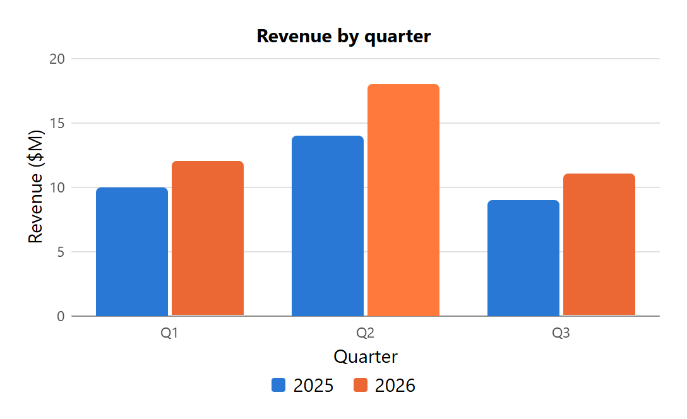
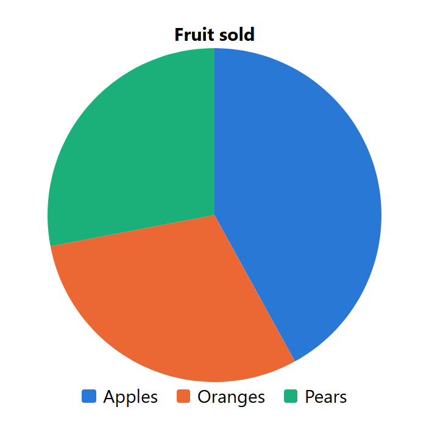
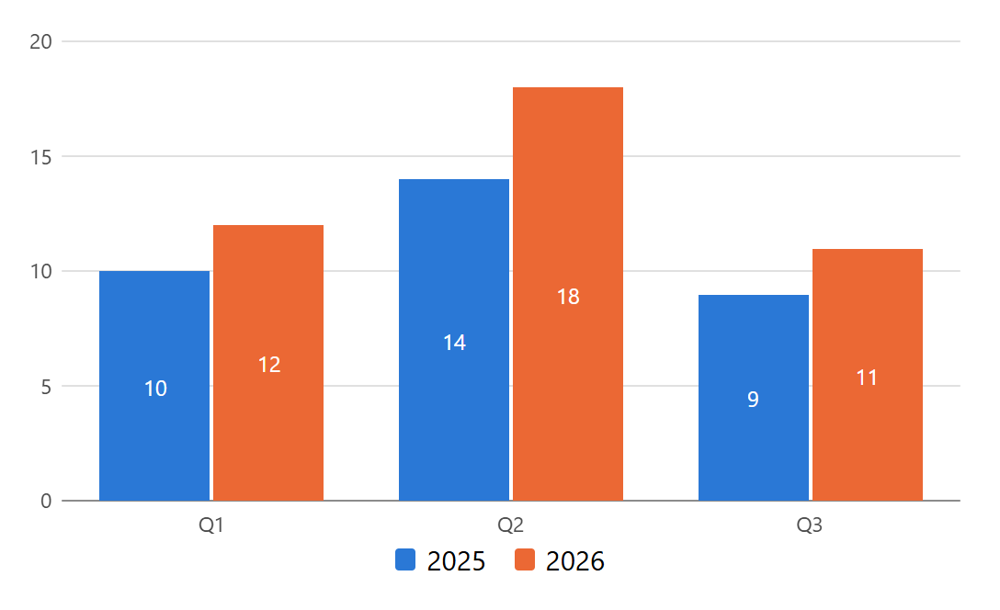
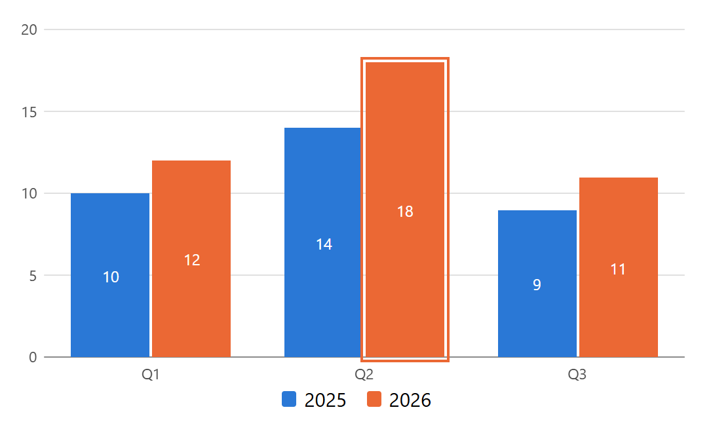
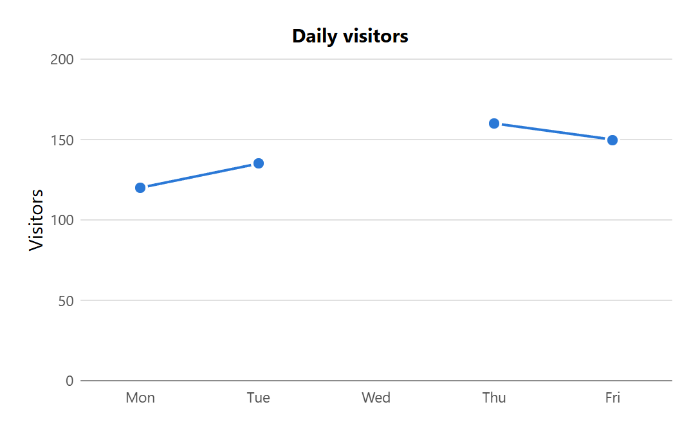
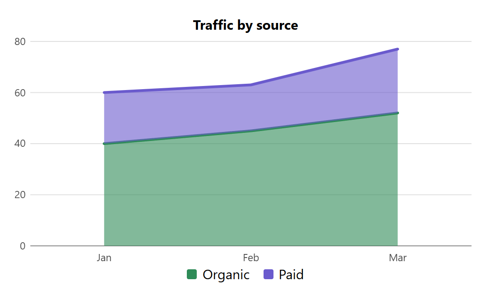
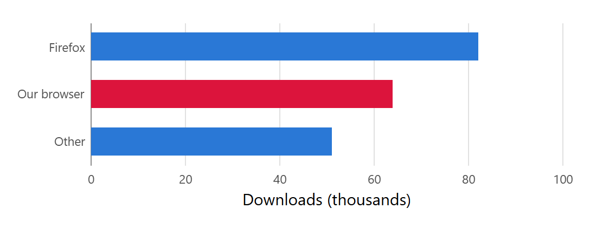
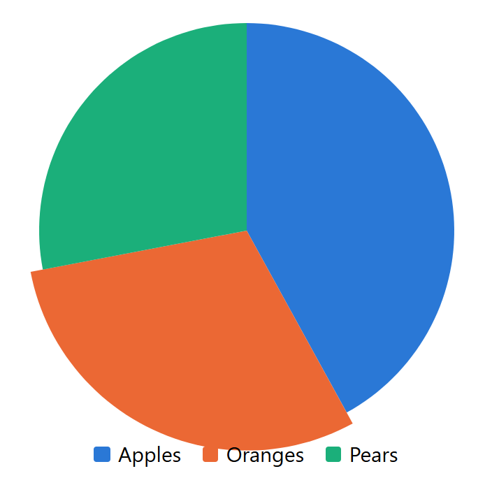
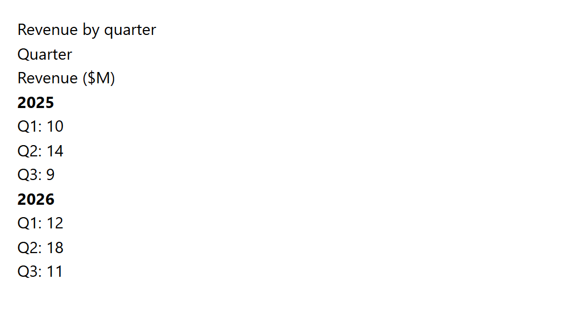

1. Introduction
This section is non-normative.
Simple charts are one of the most common things pages show, and one of the few that HTML can’t express. Today an author has to pick a charting library, or draw an SVG image by hand. Either way:
-
the numbers live in script or in path coordinates, where search engines, reader modes, and assistive technology can’t read them;
-
nothing appears when script fails to load; and
-
each library has its own configuration format, event model, and styling hooks.
The chart element keeps the numbers in markup, as data elements, and leaves the drawing to
the user agent. It covers four chart types: pie, line, bar, and area.
< chart type = "bar" > < figcaption > Revenue by quarter</ figcaption > < axis type = "category" > Quarter</ axis > < axis type = "value" > Revenue ($M)</ axis > < series name = "2025" > < data value = "10" > Q1</ data > < data value = "14" > Q2</ data > < data value = "9" > Q3</ data > </ series > < series name = "2026" > < data value = "12" > Q1</ data > < data value = "18" > Q2</ data > < data value = "11" > Q3</ data > </ series > < legend ></ legend > </ chart >
The user agent draws three pairs of bars with the title above them and a key below. Each
data element’s box is its bar, so this makes the bars rounded and highlights the one under
the pointer:
chart data{ border-start-start-radius : 4 px ; border-start-end-radius : 4 px ; } chart data:hover{ filter : brightness ( 1.15 ); }

series element:
< chart type = "pie" > < figcaption > Fruit sold</ figcaption > < data value = "42" > Apples</ data > < data value = "30" > Oranges</ data > < data value = "28" > Pears</ data > < legend ></ legend > </ chart >

The images in this specification were drawn by the polyfill.
User agents that don’t support this specification treat chart, series, and axis as
unknown elements and show their text, so the names in the chart are still readable. See
the fallback example for styles that make that fallback tidy.
2. Elements
2.1. The chart element
- Categories:
- Flow content.
- Palpable content.
- Contexts in which this element can be used:
- Where flow content is expected.
- Content model:
- In any order: zero or one
figcaptionelement, zero or onelegendelement, zero or oneaxiselement whosetypeattribute is in the category state, zero or oneaxiselement whosetypeattribute is in the value state, and either one or moreserieselements or zero or moredataelements. - Content attributes:
- Global attributes
type— The kind of chart to drawstacked— Whether series are stackedhorizontal— Whether bars run along the inline axis - DOM interface:
HTMLChartElement
The chart element represents a chart of the points it contains.
The type content attribute is an enumerated attribute with
these keywords and states:
| Keyword | State | Draws |
|---|---|---|
pie
| Pie | One wedge for each point, sized by its share of the total |
line
| Line | A marker for each point, joined by one line for each series |
bar
| Bar | One bar for each point, grouped by category |
area
| Area | A filled region under each series' line |
The attribute’s missing value default and invalid value default are both the Bar
state. A chart element’s chart type is the state of its type attribute.
The stacked attribute is a boolean attribute. When specified on
a chart whose chart type is Bar or Area, each series is drawn on top of the
series before it, instead of beside or in front of it. It has no effect on other chart types.
The horizontal attribute is a boolean attribute. When specified
on a chart whose chart type is Bar, categories run along the block axis and bars grow
along the inline axis. It has no effect on other chart types.
2.2. The series element
- Categories:
- None.
- Contexts in which this element can be used:
- As a child of a
chartelement. - Content model:
- Zero or more
dataelements. - Content attributes:
- Global attributes
name— The series' name, shown in the legend - DOM interface:
HTMLSeriesElement
The series element represents one set of related points in a chart, such as
one year’s figures. Inside a chart, a series element generates no box of its own, and neither do
its ::before and ::after pseudo-elements. Its points are laid out by the
chart.
The name content attribute gives the series' name. The value is
used in the legend and in the accessible names of the series' points.
2.3. The axis element
- Categories:
- None.
- Contexts in which this element can be used:
- As a child of a
chartelement. - Content model:
- Phrasing content.
- Content attributes:
- Global attributes
type— Which axis the element names - DOM interface:
HTMLAxisElement
The axis element represents the title of one of its parent chart’s axes.
The type content attribute is an enumerated attribute with two
keywords: category, which maps to the category state, and
value, which maps to the value state. The attribute’s
missing value default and invalid value default are both the category state.
Note: The axes are named category and value, not x and
y, because the horizontal attribute swaps their directions. An
<axis type="value"> element always names the axis the numbers are on.
2.4. Using data, figcaption, and legend in a chart
A data element can also be used as a child of a chart element or of a series element.
There, it is a point: its text is the point’s name, and its value attribute
is the point’s number.
A figcaption element can also be used as a child of a chart element. There, it is the chart’s
title.
A legend element can also be used as a child of a chart element. There, it is where the chart
draws its key.
Note: A figcaption element is used for the title, rather than caption, because the HTML
parser drops a caption start tag that isn’t inside a table. None of the elements in this
specification need changes to the HTML parser.
3. The chart’s data
3.1. Parts of a chart
The chart caption of a chart element is its first figcaption element
child, if any.
The chart legend of a chart element is its first legend element
child, if any.
The category axis title and value axis title of a chart
element are its first axis element child whose type attribute is in the
category and value state respectively, if any.
Note: This follows fieldset, figure, and table: when there are two captions, the first
one is used. The others are not rendered, and are an authoring error.
3.2. Series and points
chart element chart is the list returned by
these steps:
-
If chart has one or more
serieselement children, then let result be a list of those elements, in tree order. -
Otherwise, if chart has one or more
dataelement children, then let result be a list containing one implied series, whose points are those elements. -
Otherwise, return an empty list.
-
If chart’s chart type is Pie, then return a list containing only the first item of result.
-
Return result.
The points of a series element are its data element children, in
tree order. The points of an implied series are the data element children of its
chart, in tree order.
A chart must not contain both series element children and data element children. A chart
whose chart type is Pie must not contain more than one series element.
Note: When a chart has series element children, its data element children aren’t drawn.
Only the first series of a pie chart is drawn. Both follow HTML’s usual rule: extra content stays in
the document, but isn’t used.
type="bar" to type="pie", it keeps working:
< chart type = "pie" > < series name = "2025" > …</ series > <!-- drawn --> < series name = "2026" > …</ series > <!-- not drawn; an authoring error --> </ chart >
The name of a point is the result of stripping and collapsing ASCII whitespace in its descendant text content.
-
If point does not have a
valueattribute, then return missing. -
Let result be the result of applying the rules for parsing floating-point number values to the value of point’s
valueattribute. -
If result is an error, then return missing.
-
Return result.
Note: HTML requires every data element to have a value attribute. To mark a value that is
unknown, authors write value="", which is missing.
3.3. Categories
The categories of a chart element are an ordered set of strings: the
names of the points of every series in the chart’s series list, taken in order,
series by series.
Note: A category that only appears in a later series is added after the categories of the series before it. Authors should give every series the same categories, in the same order.
The point for a category in a series is the first of the series' points whose name is that category, or null if there is none. A series must not contain two points with the same name. Only the first is drawn.
3.4. Drawn points
A point point in a chart chart is drawn if it is the point for a category in a series in chart’s series list, and:
| Chart type | point’s value must be |
|---|---|
| Pie | Greater than zero |
| Line, Bar, or Area | Not missing |
Note: A missing value leaves a gap: there is no bar, the line breaks, and the area stops and starts again. A pie ignores slices that are zero, negative, or missing, because they have no size.
In a chart with a stacked attribute, a missing value counts as zero when working out where the
points after it in the same category start.
4. Rendering
4.1. Chart layout
A chart element’s box is laid out according to its outer display type, which is
block by default. Its contents are laid out by the chart layout
described in this section, whatever its inner display type. If the element’s display is
none, nothing is rendered.
Note: There is no new display value. The positions the chart layout gives its parts are
not exposed as CSS properties or custom properties, and authors can’t change them. They can be read
with getBoundingClientRect().
The chart layout divides the chart’s content box into these areas:
-
The chart caption, if any, laid out as a block at the block-start edge.
-
The chart legend, if any, laid out as a block at the block-end edge.
-
The plot area, which fills the space between them, minus the space the user agent needs for axis lines, tick labels, and the category axis title and value axis title.
The chart caption, the chart legend, and the axis titles are laid out with their own styles, so
font, text-align, margin, and similar properties apply to
them. Other children of the chart are not rendered.
For a chart whose chart type is not Pie, the user agent draws:
-
a category axis along the block-end edge of the plot area, or along its inline-start edge if the chart has a
horizontalattribute, labeled with the chart’s categories; -
a value axis along the other edge, with a range and tick labels the user agent chooses so that every drawn value, and every stacked total, fits. For Bar and Area charts, the range includes zero; and
-
the category axis title next to the category axis, and the value axis title next to the value axis.
A chart’s axes and tick labels have no element, and can’t be styled in this version of this specification.
4.2. Marks
Each drawn point generates a box, called its mark, whose position and size the chart layout sets as described below. A point that is not drawn generates no box.
The chart layout ignores these properties on a point, and on a series element:
display, position, the inset properties, float,
width, height and their logical and minimum and maximum forms,
margin, box-sizing (it is always border-box), and
clip-path (it is used for pie wedges). The one exception is described for line markers.
All other properties apply to a mark as usual, including background,
border, border-radius, box-shadow, outline,
opacity, filter, transform, and cursor. A
transform doesn’t change where the chart layout places the mark.
In the following, n is the number of categories, L is the length of the plot area along the category axis, and i is a category’s index, starting at 0.
4.2.1. Bar charts
The category axis is divided into n category bands of equal length. The used value of
the chart’s row-gap property separates the bands, with half of it before the first
band and after the last. Percentages resolve against L ÷ n.
When the chart has no stacked attribute, each category band is divided into one slot for each series
in the series list, in order, separated by the used value of the chart’s
column-gap property. Percentages resolve against the band’s length. A drawn point’s
mark fills its series' slot along the category axis, and runs along the value axis from zero to the
point’s value.
When the chart has a stacked attribute, a drawn point’s mark fills the whole category band along the
category axis. Along the value axis, it starts where the previous series' mark in the same category
ended, and is as long as the point’s value. Positive values stack away from zero in one
direction and negative values in the other.
Note: The gaps follow the layout of a data table with one row for each category and one column for
each series: row-gap separates categories, and column-gap separates
series. That is true whichever way the bars run.
4.2.2. Line charts
A category’s position along the category axis is the middle of its category band, computed with
a row-gap of zero: (i + 0.5) × L ÷ n.
A drawn point’s mark is a marker centered on the point’s position: its category’s position along the
category axis, and its value along the value axis. As an exception to § 4.2 Marks, the
marker’s size is the used inline-size and block-size of the point, and a
size of auto is zero.
Each series draws a line through the positions of its drawn points, in category order. The line breaks wherever the next category has no drawn point.
4.2.3. Area charts
Categories and point positions are placed as for line charts. Each series draws a filled region
between its line and its baseline: zero, or the top of the previous series if the chart has a
stacked attribute. The region breaks where a line chart’s line would.
A drawn point’s mark is a band that runs along the category axis from halfway between the previous
category’s position and its own, to halfway between its own and the next category’s position. The
first and last bands reach the edges of the plot area. Along the value axis, the band fills the
plot area. If the chart has a stacked attribute, it runs from the series' baseline to the point’s
position instead.
4.2.4. Pie charts
The pie is the largest square that fits in the center of the plot area. Every drawn point’s mark has that square’s position and size, and is clipped to its wedge.
The wedges are placed clockwise in tree order, starting at the top of the square. Each wedge’s angle is 360 degrees multiplied by its point’s value, divided by the sum of the values of all drawn points in the series.
Note: Clipping affects hit testing, so each wedge only responds to the pointer inside its own shape.
4.3. Painting series
For Line and Area charts, each series element paints its line and its filled
region. It uses the stroke, stroke-width, stroke-opacity,
stroke-dasharray, stroke-linecap, stroke-linejoin,
fill, and fill-opacity properties, as SVG shapes do. An implied series
uses those properties from the chart element.
Series paint below the marks, in tree order. The marks then paint in tree order.
4.4. Hit testing
A pointer over a mark targets the mark’s data element. A pointer over a series' line or filled
region, and not over a mark, targets the series element, or the chart element for an
implied series. Anywhere else in the chart’s box, the pointer targets the chart element, or
the chart caption, legend, or axis title it is over.
Note: :hover, :active, and events such as click and
pointerenter therefore work on points as they do on any other element.
4.5. Point text
A point’s text is used for its category label, its legend entry, and its accessible name. By default
it isn’t drawn in the mark, because the user agent style sheet gives points
content-visibility: hidden. The mark’s own background, border, and outline still paint.
If an author makes a mark’s contents visible, the chart layout centers them on the mark’s label anchor:
| Chart type | Label anchor |
|---|---|
| Bar | The center of the mark |
| Pie | On the line that halves the wedge, two thirds of the way from the center to the edge. The contents are clipped to the wedge. |
| Line | Just above the marker |
| Area | Just above the point’s position |
#revenue data{ content-visibility : visible; font-size : 0 ; } #revenue data::after{ content : attr ( value); font-size : 0.75 rem ; color : white; }

4.6. The legend
A chart legend draws one entry for each series in the chart’s series list that has a
name attribute. For a pie chart, it draws one entry for each drawn point instead. Each
entry is a small swatch in the used color of the series or point, followed by the series'
name or the point’s name.
The legend element’s own children are not rendered. Legend entries have no element, and can’t be styled in this version of this specification.
4.7. User agent style sheet
The user agent style sheet contains these rules:
@namespace "http://www.w3.org/1999/xhtml" ; chart{ display : block; block-size : 20 em ; gap : 25 % 2 px ; } chart[ type=pie i] { block-size : auto; aspect-ratio : 1 ; } chart > figcaption{ display : block; text-align : center; font-weight : bold; } chart > legend, chart > axis{ display : block; } chart > legend{ text-align : center; } /* Default palette. Authors override it with color. */ chart > data, series:nth-of-type( 8 n +1 ), chart[ type=pie i] data:nth-of-type( 8 n +1 ) { color : #2a78d6; } series:nth-of-type( 8 n +2 ), chart[ type=pie i] data:nth-of-type( 8 n +2 ) { color : #eb6834; } series:nth-of-type( 8 n +3 ), chart[ type=pie i] data:nth-of-type( 8 n +3 ) { color : #1baf7a; } series:nth-of-type( 8 n +4 ), chart[ type=pie i] data:nth-of-type( 8 n +4 ) { color : #eda100; } series:nth-of-type( 8 n +5 ), chart[ type=pie i] data:nth-of-type( 8 n +5 ) { color : #e87ba4; } series:nth-of-type( 8 n +6 ), chart[ type=pie i] data:nth-of-type( 8 n +6 ) { color : #008300; } series:nth-of-type( 8 n +7 ), chart[ type=pie i] data:nth-of-type( 8 n +7 ) { color : #4a3aa7; } series:nth-of-type( 8 n +8 ), chart[ type=pie i] data:nth-of-type( 8 n +8 ) { color : #e34948; } /* Lines and areas. The chart's own values are for an implied series. */ chart{ stroke : #2a78d6; stroke-width : 2 px ; stroke-linejoin : round; stroke-linecap : round; fill : none; } series{ stroke : currentColor; } chart[ type=area i] { fill : #2a78d6; fill-opacity : 0.1 ; } chart[ type=area i] series{ fill : currentColor; } /* Marks */ chart data{ content-visibility : hidden; } chart:not([ type=pie i], [ type=line i], [ type=area i]) data{ background : currentColor; transform-origin : 50 % 100 % ; } chart:not([ type=pie i], [ type=line i], [ type=area i])[ horizontal] data{ transform-origin : 0 % 50 % ; } chart[ type=pie i] data{ background : currentColor; } chart[ type=line i] data{ inline-size : 0.5 em ; block-size : 0.5 em ; border-radius : 50 % ; background : currentColor; box-shadow : 0 0 0 2 px Canvas; } chart[ type=area i] data{ transform-origin : 50 % 100 % ; } chart[ type=area i] data:hover{ background : color-mix ( in srgb, currentColor15 % , transparent); } chart data:focus-visible{ outline : 2 px solid; outline-offset : 2 px ; }
Note: The palette’s order keeps neighboring series distinguishable for readers with the common forms of color vision deficiency. Three of its colors are below 3:1 contrast against a white background, so charts with more than two series should have a legend or visible labels.
Note: The transform-origin values put a mark’s anchor where it looks natural when the mark
is scaled: a bar grows out from its base, and a wedge moves out from the center of the pie, which is
the center of its box.
5. Interaction
5.1. Keyboard
A chart element with at least one drawn point takes one place in the sequential focus navigation order. Each chart has an active point, which is initially its first
drawn point in tree order. When sequential focus navigation reaches the chart, the user agent runs
the focusing steps for the chart’s active point. Moving focus forward or backward from any point
in the chart leaves the chart.
While a point in a chart is focused, the user agent should move focus, and the active point, when the user presses these keys:
| Key | Bar, Line, and Area | Pie |
|---|---|---|
| ArrowRight | The drawn point in the next category of the same series | The next drawn point |
| ArrowLeft | The drawn point in the previous category of the same series | The previous drawn point |
| ArrowDown | The drawn point in the same category of the next series | The next drawn point |
| ArrowUp | The drawn point in the same category of the previous series | The previous drawn point |
| Home | The first drawn point in the same series | The first drawn point |
| End | The last drawn point in the same series | The last drawn point |
For a chart with a horizontal attribute, ArrowDown and ArrowUp move between
categories, and ArrowRight and ArrowLeft move between series. When a movement
reaches a category or series without a drawn point, it skips to the next one in the same direction.
When there is none, focus doesn’t move.
Note: Focus moves to the data element itself, so focus and blur events
fire at it and data:focus-visible matches it.

5.2. Dynamic changes
When any of the following change, the user agent updates the chart’s rendering:
-
the chart’s attributes;
-
the chart’s children, or the children or attributes of its
seriesanddataelement children; or -
the text of any of its points.
If the active point is no longer drawn, it becomes the drawn point that is now in its place in tree order, or the last drawn point if there is none. If a focused point stops being drawn, the user agent runs the focusing steps for the new active point.
Note: This means script, and other features that change the DOM such as the template
attribute in JSON Templates,
update a chart by changing its data elements.
6. The DOM interface
[Exposed =Window ]interface :HTMLChartElement HTMLElement { [HTMLConstructor ](); [constructor CEReactions ]attribute DOMString type ; [CEReactions ,Reflect ]attribute boolean stacked ; [CEReactions ,Reflect ]attribute boolean horizontal ; }; [Exposed =Window ]interface :HTMLSeriesElement HTMLElement { [HTMLConstructor ](); [constructor CEReactions ,Reflect ]attribute DOMString name ; }; [Exposed =Window ]interface :HTMLAxisElement HTMLElement { [HTMLConstructor ](); [constructor CEReactions ]attribute DOMString type ; };
The type IDL attribute must reflect the
type content attribute, limited to only known values.
The stacked,
horizontal, and
name IDL attributes must reflect the content
attributes of the same name.
The type IDL attribute must reflect the type
content attribute, limited to only known values.
const chart= document. querySelector( "chart" ); chart. type; // "bar", including when the attribute is missing or invalid chart. type= "line" ; // redraws as a line chart // Add a point to the first series. const point= document. createElement( "data" ); point. value= "15" ; point. textContent= "Q4" ; chart. querySelector( "series" ). append( point); // Respond to the user picking a point. chart. addEventListener( "click" , event=> { const picked= event. target. closest( "data" ); if ( picked) console. log( picked. textContent, picked. value); }); // Feature detection. const supported= "HTMLChartElement" in window;
7. Changes to the HTML Standard
To integrate this specification into the HTML Standard [HTML], make these changes:
-
Add a new section for § 2.1 The chart element, § 2.2 The series element, and § 2.3 The axis element in "Embedded content", after the
canvaselement. -
Add
chartto the lists of flow content and palpable content. -
In the
dataelement, add "As a child of achartorserieselement" to its contexts, and a note pointing to § 2.4 Using data, figcaption, and legend in a chart. -
In the
figcaptionelement and thelegendelement, add "As a child of achartelement" to their contexts. -
In "Rendering", add § 4 Rendering, including the rules in § 4.7 User agent style sheet.
-
In "User interaction", add § 5.1 Keyboard.
-
In the indices, add the
chart,series, andaxiselements, their attributes, and theHTMLChartElement,HTMLSeriesElement, andHTMLAxisElementinterfaces.
8. Accessibility considerations
-
A
chartelement maps to thegraphics-documentrole [GRAPHICS-ARIA-1.0], with a role description of "chart". Its accessible name comes from its chart caption, unlessaria-labeloraria-labelledbyis specified. -
A
serieselement maps to thegraphics-objectrole, and its accessible name is itsnameattribute. -
A drawn point maps to the
graphics-symbolrole. Its accessible name combines its series' name, its name, and its value, such as "2026, Q2, 18". Its text is exposed even thoughcontent-visibility: hiddenkeeps it from being drawn. -
The chart takes one place in the tab order, and the arrow keys move between points, so keyboard users can reach every value without tabbing through each one.
-
The values are in the markup as text, so they are also available to reader modes, translation, and user agents that don’t draw the chart.
-
The default palette isn’t enough to tell series apart for all users. Authors should add a legend and axis titles, and can add patterns or borders with CSS.
Define how chart, series, and points map to platform accessibility APIs in
[HTML-AAM-1.0].
9. Security and privacy considerations
-
This specification exposes no new information. A chart draws only values that are already in the document.
-
A chart fetches nothing and runs no script. Its text is used as text, never as markup.
-
The positions of marks can be read with
getBoundingClientRect(), as the positions of other elements can. They depend only on the document’s content and styles.
10. More examples
This section is non-normative.
< chart type = "line" > < figcaption > Daily visitors</ figcaption > < axis type = "value" > Visitors</ axis > < data value = "120" > Mon</ data > < data value = "135" > Tue</ data > < data value = "" > Wed</ data > < data value = "160" > Thu</ data > < data value = "150" > Fri</ data > </ chart >

< style > # traffic series { stroke-width : 3 px ; fill-opacity : 0.6 ; } # traffic . organic { color : seagreen ; } # traffic . paid { color : slateblue ; } </ style > < chart id = "traffic" type = "area" stacked > < figcaption > Traffic by source</ figcaption > < series class = "organic" name = "Organic" > < data value = "40" > Jan</ data > < data value = "45" > Feb</ data > < data value = "52" > Mar</ data > </ series > < series class = "paid" name = "Paid" > < data value = "20" > Jan</ data > < data value = "18" > Feb</ data > < data value = "25" > Mar</ data > </ series > < legend ></ legend > </ chart >

< chart type = "bar" horizontal style = "block-size: 12em; row-gap: 40%" > < axis type = "value" > Downloads (thousands)</ axis > < data value = "82" > Firefox</ data > < data value = "64" style = "color: crimson" > Our browser</ data > < data value = "51" > Other</ data > </ chart >

transform-origin is the center of the pie:
chart[ type=pie] data{ transition : transform0.15 s ; } chart[ type=pie] data:is( :hover, :focus-visible) { transform : scale ( 1.06 ); }

< template id = "salesPoint" json = "./sales.json" > < data key = "point" ></ data > </ template > < chart type = "bar" > < figcaption > Sales</ figcaption > < series name = "2026" template = "salesPoint" ></ series > </ chart >
[ { "point" : { "value" : "42" , "content" : "Apples" } }, { "point" : { "value" : "30" , "content" : "Oranges" } } ]
display on points and series,
don’t draw a point’s contents or a series' pseudo-elements, and place axis titles themselves, so
the styles don’t affect the chart:
chart, series, axis, chart data{ display : block; } series::before{ content : attr ( name); font-weight : bold; } chart data::after{ content : ": " attr ( value); }

11. Alternate proposals
This section is non-normative.
11.1. Pseudo-elements for lines and areas
Instead of letting series elements use SVG’s stroke and fill properties,
the line and filled region could be pseudo-elements:
series : :chart-line{ border-block-start : 3 px dashed currentColor; } series::chart-area{ background : linear-gradient ( currentColor, transparent); opacity : 0.4 ; }
A pseudo-element’s box would be the plot area, and it would be clipped to the line or region’s
shape. That would allow gradients and other CSS backgrounds in the fill, and would let
series::chart-line:hover be styled on its own. However, CSS has no way to draw a border
along a path, so the line’s thickness and dashes would still need new properties. The
stroke properties already describe a line along a path, and already parse in CSS.
11.2. A table as the data source
A chart could draw a table element inside it, with one row for each category and one column for
each series. Tables have the best fallback, and already have captions and headers. But cell text
would have to be parsed as numbers, cells can’t be the marks without changing how tables are laid
out, and a cell is a poor hit target for a pie wedge.
11.3. Points with a series attribute
Instead of series elements, each point could name its series:
<data series="2026" value="18">Q2</data>. Every point would be a child of the
chart, which suits templates that output one element for each record. But series names would repeat
on every point, a series' name and color would have nowhere to go, and the fallback would be one
long list.
11.4. The caption element for the title
caption would be a natural name for a chart’s title, but the HTML parser drops a caption
start tag outside a table, leaving its text directly in the chart. Using it would need a parser
change, couldn’t be polyfilled, and would give poor fallback.
11.5. Exposed geometry
The chart layout could be a new display: chart value, or it could set custom properties
such as --chart-x and --chart-height on each point for the user agent style
sheet to use. Both would let authors move marks, which could make the chart show the wrong values.
Keeping the geometry internal keeps each mark in its correct place.
12. Open issues
Element names. The names chart, series, and
axis need checking against existing content that uses them as unknown elements.
Numbers and dates on the category axis. This version only supports
categories, spaced evenly. Should a later version add an attribute such as x for
numeric or date positions?
Value axis range and number formatting. Should the axis element take
min and max attributes? Should tick labels and accessible names be
formatted, for example through the
formatter
attribute?
Styling axes, ticks, and legend entries. Pseudo-elements such as
chart::axis, chart::tick, and legend::swatch are planned after
this version.
Legend position. The legend is always at the block-end edge. Should authors be able to move it, with an attribute or with CSS?
Negative bars and right-to-left text. The transform-origin in the
user agent style sheet is at the base of positive bars only, and horizontal bars always grow to the
right. The user agent style sheet has no way to select negative bars or change direction.
Overlapping area bands. In an area chart that isn’t stacked, each series' bands fill the whole plot area, so only the last series' points can be reached with a pointer. Should hit testing pick the series whose value is closest to the pointer instead?
Small line markers. A marker small enough to look right is hard to hit. Should the hit area for a marker be larger than its box?
Series without names. A series with no name attribute has no legend
entry. Should the user agent generate a name, such as "Series 2", instead?
Tooltips. Should the user agent show a point’s name and value when it is hovered or focused, or leave that to authors?
Palette and dark mode. Should the default palette adapt to
color-scheme, and should it be defined as a CSS feature that other content can use?